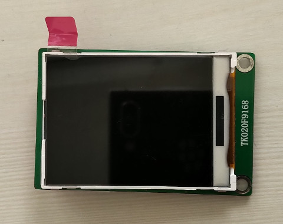
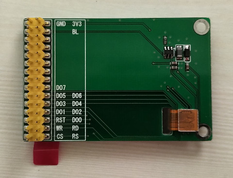
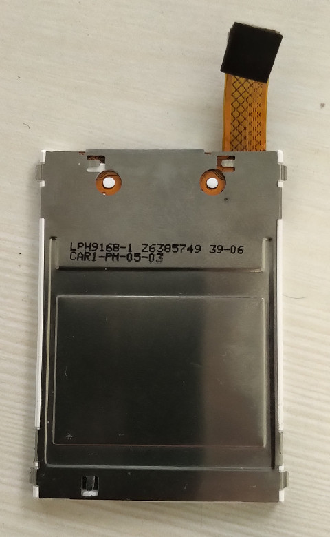
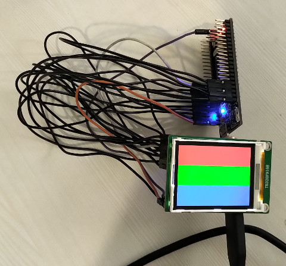

屏



#include "stc15w4k56s4.h"
#define BL P05
#define RS P04
#define CS P03
#define RD P02
#define WR P01
#define RST P00
void delayms(unsigned int ms)
{
unsigned int cnt = 0;
while (ms--) {
for (cnt = 0; cnt < 1000; cnt++) {
}
}
}
void lcd_write(unsigned char rs, unsigned int val)
{
CS = 0;
if (rs) {
RS = 1;
}
else {
RS = 0;
}
RD = 1;
WR = 1;
P2 = (val >> 8);
WR = 0;
WR = 1;
P2 = val;
WR = 0;
WR = 1;
CS = 1;
}
void lcd_write_cmd(unsigned int val)
{
lcd_write(0, val);
}
void lcd_write_data(unsigned int val)
{
lcd_write(1, val);
}
void lcd_set_color(void)
{
unsigned int i = 0;
unsigned int j = 0;
unsigned int color[] = { 0xf800, 0x7e0, 0x1f, 0 };
for (i = 0; i < 240; i++) {
for (j = 0; j < 320; j++) {
lcd_write_data(color[i / 80]);
}
}
}
void lcd_init(void)
{
lcd_write_cmd(0x0000);
delayms(10);
lcd_write_cmd(0x0000);
delayms(10);
lcd_write_cmd(0x0000);
delayms(10);
lcd_write_cmd(0x05ff);
lcd_write_data(0x0000);
lcd_write_cmd(0x001d);
lcd_write_data(0x0005);
delayms(100);
lcd_write_cmd(0x0000);
lcd_write_data(0x0001);
delayms(100);
lcd_write_cmd(0x0001);
lcd_write_data(0x0027);
lcd_write_cmd(0x0002);
lcd_write_data(0x0200);
lcd_write_cmd(0x0003);
lcd_write_data(0x0038);
lcd_write_cmd(0x0007);
lcd_write_data(0x4004);
lcd_write_cmd(0x000d);
lcd_write_data(0x0011);
delayms(100);
lcd_write_cmd(0x0012);
lcd_write_data(0x0303);
lcd_write_cmd(0x0013);
lcd_write_data(0x0102);
lcd_write_cmd(0x001c);
lcd_write_data(0x0000);
lcd_write_cmd(0x0102);
lcd_write_data(0x00f6);
delayms(500);
lcd_write_cmd(0x0103);
lcd_write_data(0x0007);
delayms(100);
lcd_write_cmd(0x0105);
lcd_write_data(0x0111);
delayms(100);
lcd_write_cmd(0x0300);
lcd_write_data(0x0200);
lcd_write_cmd(0x0301);
lcd_write_data(0x0002);
lcd_write_cmd(0x0302);
lcd_write_data(0x0000);
lcd_write_cmd(0x0303);
lcd_write_data(0x0300);
lcd_write_cmd(0x0304);
lcd_write_data(0x0700);
lcd_write_cmd(0x0305);
lcd_write_data(0x0070);
lcd_write_cmd(0x0402);
lcd_write_data(0x0000);
lcd_write_cmd(0x0403);
lcd_write_data(0x013f);
lcd_write_cmd(0x0406);
lcd_write_data(0x0000);
lcd_write_cmd(0x0407);
lcd_write_data(0x00ef);
lcd_write_cmd(0x0408);
lcd_write_data(0x0000);
lcd_write_cmd(0x0409);
lcd_write_data(0x013f);
lcd_write_cmd(0x0200);
lcd_write_data(0x0000);
lcd_write_cmd(0x0201);
lcd_write_data(0x0000);
lcd_write_cmd(0x0100);
lcd_write_data(0xC010);
delayms(500);
lcd_write_cmd(0x0101);
lcd_write_data(0x0001);
lcd_write_cmd(0x0100);
lcd_write_data(0xf7fe);
delayms(800);
lcd_write_cmd(0x202);
}
void gpio_init(void)
{
P0M0 = 0x00;
P0M1 = 0x00;
P1M0 = 0x00;
P1M1 = 0x00;
P2M0 = 0x00;
P2M1 = 0x00;
P3M0 = 0x00;
P3M1 = 0x00;
P4M0 = 0x00;
P4M1 = 0x00;
P5M0 = 0x00;
P5M1 = 0x00;
}
void main(void)
{
gpio_init();
AUXR |= 0x80;
BL = 1;
RST = 0;
delayms(150);
RST = 1;
delayms(150);
lcd_init();
lcd_set_color();
while (1) {
P55 = 0;
delayms(1000);
P55 = 1;
delayms(1000);
}
}
Makefile
all: sdcc main.c packihx main.ihx > main.hex flash: sudo stcgal -p /dev/ttyO2 -P stc15 -o clock_source=external main.hex clean: rm -rf main.ihx main.lst main.mem main.rst main.lk main.map main.rel main.sym main.hex
完成
